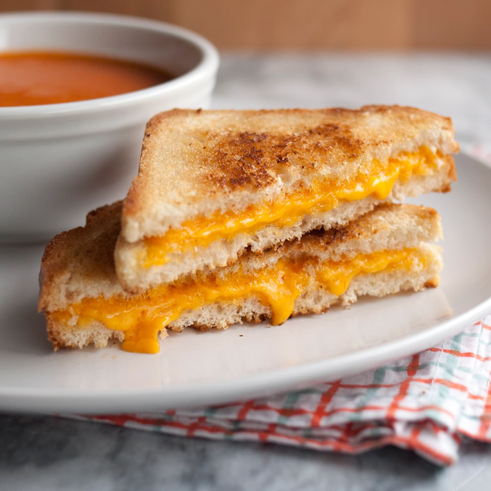

Grilled Cheese Sandwhich

Quick & Easy Go-To Lunch Sandwhich
Who doesn't love a grilled cheese sandwhich? This is a very simple sandwhich that pairs well will a warm cup of tomato soup!
Ingredients:
- butter
- 2 slices of bread
- 2 slices of cheese (your choice)
- kosher salt
Steps:
- Melt 1 piece of butter in a large nonstick skillet over medium heat until foaming subsides. Add both bread slices and cook, swirling occasionally, until pale golden brown on bottom sides, about 2 minutes.
- Transfer bread to a cutting board, toasted side up. Place cheese slices on top of one slice, then close sandwich, with both toasted sides facing inward.
- Melt 1 piece of butter in skillet and reduce heat to medium-low. Add sandwich and cook, swirling occasionally, until deep, even golden brown, about 5 minutes. Remove sandwich using a flexible metal spatula. Add remaining butter. Return sandwich to skillet, cooked side up. Season with salt. Cook, swirling occasionally, until second side is deep, even golden brown and cheese is thoroughly melted, about 5 minutes. Serve immediately.